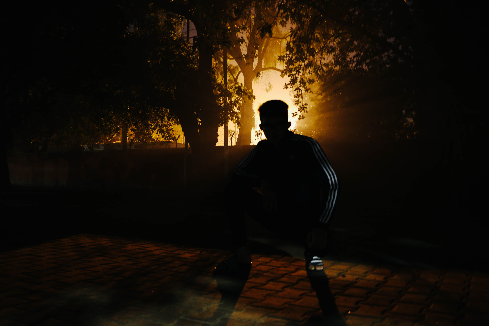

@ILLSEPTION
Hi, I'm Aman Pait, a photographer and videographer based in Chandigarh, India. I got started with photography in my freshman year of highschool through Instagram and have since branched to doing video work alongwith my photography. My eye is naturally drawn to architecture and how humans interact with it. I've been an integral part of the productions, "Shikhandi" and "Team Stormbreakers" by Team Imagen, the photography club of UIET, Panjab University. Aside from my personal work, I have been involved in high profile events like UDYAMI - the national entrepreneurship summit of Panjab University and TedXChandigarh. In my free time, I like to code and listen to music.